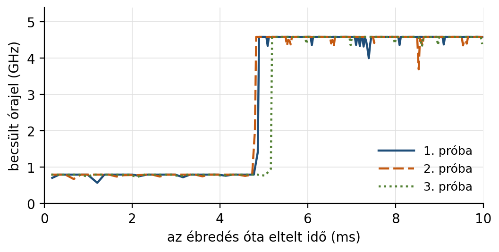
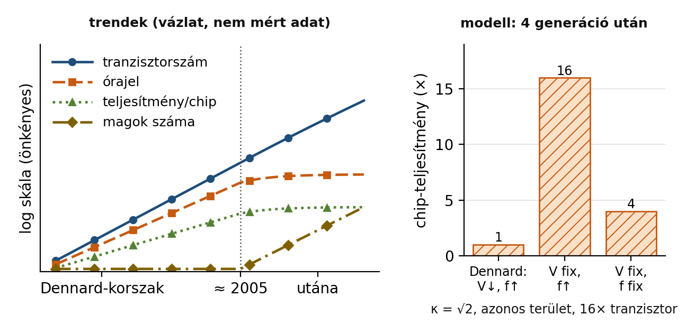

Egy fél másodpercig alvó processzormag nem teljes sebességgel ébred.
A könyv mérőgépén (i5-13400F, powersave szabályozó,
intel_pstate meghajtó, 2026. november 25.) egy program 500
ms alvás után 128 000 függő összeadásból álló darabokat futtatott, és
mindegyik idejét mérte. Az eredmény két jól elkülönülő tartomány: az
első körülbelül 5 ms-ban a mag becsült órajele 0,8 GHz körüli, majd egy
ugrással 4,6 GHz közelébe áll. Ugyanaz a kód az ébredés utáni első
ezredmásodpercekben tehát nagyjából hatszor lassabban fut.

powersave szabályozó, 2026-11-25; adat:
ca008-felfutas.csv)A mag nem hibás: a rendszer energiát takarít meg azzal, hogy tétlen állapotból óvatosan indul. A Benchmarkolás: mérni tanulni alfejezet ezt mérési zajként mutatta be; most a másik oldaláról nézzük. A feszültség és a frekvencia futás közbeni állítása a processzor leghatásosabb energiaeszköze, és ugyanez a fizika magyarázza, miért állt meg a 2000-es évek közepén az órajel növekedése, és miért lett sok magunk és sokféle gyorsítónk.
Egy kapu annál gyorsabban tölti fel a kimenetét, minél nagyobb a tápfeszültség. Alacsonyabb feszültségen tehát lassabb órajelet kell választani, különben a jel nem ér be időben a következő regiszterbe. A DVFS (dynamic voltage and frequency scaling) ezt a kényszert fordítja előnyre: ha nincs szükség a teljes sebességre, az órajellel együtt a feszültséget is csökkentjük, és a miatt a dinamikus energia sokat esik. Az ár a hosszabb futási idő, és vele a hosszabban folyó szivárgás.
Az ábra bal felső panelje a modell feszültség–órajel görbéjét mutatja hét munkaponttal, a jobb felső a mag teljesítményét ezekben. Alul ugyanannak a feladatnak az energiája látszik munkapontonként, egyéb teljesítmény nélkül és 2 W egyéb teljesítménnyel. Figyeld meg, hogy a nyíllal jelölt energiaminimum a második esetben jobbra, a gyorsabb pontok felé tolódik.
Az Órajel, kritikus út és időzítési korlátok alfejezet szerint a ciklusidőnek legalább akkorának kell lennie, mint a leghosszabb regiszter–regiszter út késleltetése. Egy kapu késleltetése körülbelül : annyi idő, amíg a bekapcsolt tranzisztor árama a kapacitást feltölti. Ez az áram a küszöb feletti feszültségrésszel nő, ezért szokásos közelítés (alfa-hatvány törvény):
Itt a küszöbfeszültség, egy technológiától függő kitevő (jellemzően 1 és 2 között, ellenőrizendő), pedig egy állandó, amelyet egy ismert munkapont rögzít. A képlet azt mondja, hogy a küszöb felett közel lineárisan nő -vel, a küszöb közelében viszont összeomlik. A könyv modelljében V, , és 1,0 V-on GHz.
Ha egy tartományon nagyjából arányos -fel, akkor
Szavakkal: az órajel 20%-os csökkentése a dinamikus teljesítményt körülbelül a felére, a feladat dinamikus energiáját () a kétharmadára viszi. Ez csak közelítés: a küszöb miatt a feszültség nem csökkenthető az órajellel arányosan, és az alsó tartományban a nyereség elfogy. A modellben 1,0 V-ról 0,8 V-ra menve az órajel 72%-ára, a dinamikus teljesítmény 46%-ára csökken, míg a köbös képlet 37%-ot jósolna.
A feladat energiája (Dinamikus és statikus fogyasztás): . A feszültség csökkentésével fogy, de a idő nő, a küszöb közelében rohamosan. A kettő eredője U alakú görbe, a minimuma a legtakarékosabb munkapont. A magon kívüli teljesítmény a minimumot a gyorsabb pontok felé tolja. Ha a feladat egy része a memóriára várakozik ( idő, amely nem függ az órajeltől), akkor az órajel csökkentése arányaiban kevesebb időt ad hozzá: a memóriakorlátos kód kis lassulás árán futhat takarékosan.
A processzor véges sok munkapontot (P-állapotot) ismer, a tétlenség mélységét pedig C-állapotok írják le: C0 a futó mag, a mélyebb C-állapotok előbb az órajelet, majd a tápot kapcsolják le, cserébe hosszabb ébredési idővel (az állapotok neve és késleltetése gyártófüggő, ellenőrizendő). A választást a hardver és az operációs rendszer szabályozója (governor) közösen végzi: a terhelés, a hőmérséklet és a beállított preferencia alapján. Linuxon az aktuális beállítás olvasható:
cat /sys/devices/system/cpu/cpu2/cpufreq/scaling_governor # pl. powersave
cat /sys/devices/system/cpu/cpu2/cpufreq/scaling_driver # pl. intel_pstateA szabályozó átállítása rendszergazdai jogot kér; a könyv nem is kéri, hogy átállítsd. Ha van jogod hozzá, futtasd ugyanazt a mikrobenchmarkot két beállítással, és hasonlítsd össze a mediánt és a becsült órajelet; ha nincs, a fenti modell mutatja, mire számíts.
Turbó és teljesítménykeret. A tokra egy hosszabb távon betartandó teljesítménykeret (a hűtés tervezési értéke, a TDP körüli szám) vonatkozik, rövid időre a processzor átlépheti. Ha kevés mag dolgozik, mindegyik kaphat magasabb feszültséget és órajelet (turbó); ha mind, vissza kell lépni. A modellben 65 W-os keret, 5 W magon kívüli rész és 16 mag mellett 1,2 V-on csak 4 mag fér el, 0,8 V-on viszont 15, és ezek együtt több mint kétszer annyi ciklust adnak másodpercenként (32,4 a 15,0 milliárddal szemben). Sok lassabb mag tehát többet teljesít, ha a feladat párhuzamosítható.
A mérő programozó számára a következmény: az órajel a hőmérséklettől, a többi mag terhelésétől és az előzményektől függ. Az időméréshez a Benchmarkolás: mérni tanulni bemelegítési és ismétlési szabályai kellenek, és érdemes a becsült órajelet is feljegyezni.
Dennard és szerzőtársai 1974-es megfigyelése [S-DENNARD]: ha egy technológiai lépésben minden méretet és a feszültséget is -adára csökkentjük, a tranzisztorok -szor gyorsabbak, a lapka egységnyi területén -szer több fér el, a teljesítménysűrűség pedig nem változik. Egy tranzisztor kapacitása , feszültsége , órajele , tehát teljesítménye -szeres, és ezt éppen kiegyenlíti a -szeres darabszám. Ez volt a Dennard-skálázás: minden generáció ingyen adott gyorsabb és bonyolultabb processzort. (A tranzisztorszám növekedése önmagában a Moore-megfigyelés; a kettőt ne keverd.)
A 2000-es évek közepére a feszültség alig csökkenthető tovább: a küszöbfeszültséget nem lehet lejjebb vinni a szivárgás exponenciális növekedése nélkül (Dinamikus és statikus fogyasztás). Ha rögzített, a tranzisztorszám további növelése a teljesítménysűrűséget emeli. A jobb oldali panel négy generáció (, 16-szoros tranzisztorszám) végeredményét mutatja a modellben: Dennard szerint a chip teljesítménye változatlan, rögzített feszültséggel és növekvő órajellel 16-szoros, rögzített órajellel is 4-szeres.

Mivel a hűtés keretét nem lehet 4–16-szorosára emelni, a lapka egyre nagyobb része nem kapcsolhat egyszerre teljes sebességgel: ezt hívják sötét szilíciumnak (dark silicon). A következmények a könyv több fejezetét magyarázzák:
1. lépés: a modell állandója. Az 1,0 V, 3 GHz pontból (GHz-ben, voltban).
2. lépés: 0,8 V. GHz.
3. lépés: teljesítmény (a Dinamikus és statikus fogyasztás magja, nF, A). W, W.
4. lépés: a 6 milliárd ciklusos feladat. s, J. Az 1,0 V-os ponthoz (15 J, 2 s) képest 27% energiamegtakarítás 39% hosszabb idő árán; az EDP J·s a J·s helyett, vagyis EDP-ben a két pont majdnem egyforma.
5. lépés: Dennard. Két generáció, , rögzített , de az órajel -szeres: a tranzisztorszám 4-szeres, egy tranzisztor teljesítménye -szeres, a chipé 4-szeres. Azonos keretben a tranzisztorok negyede kapcsolhat egyszerre.
import sys; sys.path.insert(0, "code")
from archkit import power as pw
vf, base = pw.VFModel(vth=0.35, beta=1.5, v_ref=1.0, f_ref=3e9), pw.Core()
print(" V f GHz P_dyn P_stat T s E J EDP J·s magok (65 W)")
for r in pw.dvfs_table(vf, [0.6, 0.7, 0.8, 0.9, 1.0, 1.2], base, cycles=6e9):
n = pw.max_cores(vf, base, r["v"], budget=65, uncore=5, total=16)
print(f"{r['v']:.1f} {r['f'] / 1e9:5.2f} {r['p_dyn']:5.2f} {r['p_stat']:5.2f} "
f"{r['time']:5.2f} {r['energy']:5.2f} {r['edp']:6.1f} {n:8d}") V f GHz P_dyn P_stat T s E J EDP J·s magok (65 W)
0.6 1.19 0.86 0.90 5.03 8.85 44.5 16
0.7 1.69 1.66 1.05 3.54 9.60 34.0 16
0.8 2.16 2.76 1.20 2.78 11.01 30.6 15
0.9 2.59 4.20 1.35 2.31 12.84 29.7 10
1.0 3.00 6.00 1.50 2.00 15.00 30.0 8
1.2 3.74 10.77 1.80 1.60 20.17 32.4 4Ebben a modellben az EDP minimuma 0,9 V-nál van, az energiáé 0,6 V körül. A Dennard-modell három változata:
for name, vs, fs in (("Dennard", True, True), ("V rögzített, f nő", False, True),
("V és f rögzített", False, False)):
r = pw.dennard(4, voltage_scales=vs, freq_scales=fs)[-1]
print(f"{name:18s} tranzisztor ×{r['transistors']:.0f} f ×{r['f']:.1f} "
f"P_chip ×{r['p_chip']:.0f} egyszerre aktív: {100 * r['active']:.0f}%")Dennard tranzisztor ×16 f ×4.0 P_chip ×1 egyszerre aktív: 100%
V rögzített, f nő tranzisztor ×16 f ×4.0 P_chip ×16 egyszerre aktív: 6%
V és f rögzített tranzisztor ×16 f ×1.0 P_chip ×4 egyszerre aktív: 25%Továbbvitt eredmény. A DVFS egyszerre mérési zajforrás (az órajel a terheléstől, a hőmérséklettől és az előzménytől függ, ébredés után ezredmásodpercekig alacsony lehet) és tervezési eszköz (a feszültség csökkentése szerint takarít energiát, a hosszabb idő viszont a statikus és egyéb tagot növeli, ezért van energiaminimum). A Hardveres eseményszámlálók és a perf alfejezet a ciklusban és időben mért értékek eltérésénél, a Vegyes vizsgafeladatsor a munkapont-választásnál használja.
ca008-felfutas.csv
alapján add meg próbánként, mikor lépi át először a becsült órajel a 4
GHz-et, és mekkora a medián darabidő előtte és utána.Alacsonyabb feszültségen a kapuk lassabbak, ezért a DVFS a feszültséget és az órajelet együtt állítja; a modell . A dinamikus teljesítmény ekkor meredeken, közelítőleg köbösen csökken, a feladat viszont tovább tart, ezért az energia U alakú, minimummal; egyéb teljesítmény a minimumot a gyorsabb pontok felé tolja, a memóriakorlátos kód pedig olcsón lassítható. A teljesítménykeret miatt kevés mag futhat magas, sok mag alacsonyabb órajelen. A Dennard-skálázás vége (a feszültség megállása) leállította az órajelversenyt, sötét szilíciumot, többmagos, heterogén és specializált processzorokat hozott. A DVFS mérési zajforrás és tervezési eszköz is: mérésnél az órajelet kontrollálni vagy rögzíteni kell.
1. GHz, s; W, J (a 6 milliárd ciklusos érték fele).
2. , tehát kb. 49%-os csökkenés. Az idő -szörös, az energia -szoros.
3. A tranzisztorszám -szoros, egy tranzisztor teljesítménye -szeres (csak a kapacitás csökken, ), a chipé -szoros; a régi keretben a tranzisztorok -a kapcsolhat.
4. Egységnyi ciklusra: (a) 8 mag: s; 15 mag: s. A kevesebb, gyorsabb mag nyer, mert a soros rész uralkodik. (b) A soros rész mindkettőnél s: 8 mag s, 15 mag s. Turbóval a soros rész gyors, és a sok mag nyer.
5.
volts = [i / 1000 for i in range(400, 1301)]
for p_o, t_mem in ((0, 0), (2, 0), (0, 2), (2, 2)):
rows = pw.dvfs_table(vf, volts, base.at(p_other=p_o), 6e9, t_mem)
best = min(rows, key=lambda r: r["energy"])
print(f"P_o = {p_o} W, t_mem = {t_mem} s: V = {best['v']:.3f}, f = {best['f'] / 1e9:.2f} "
f"GHz, E = {best['energy']:.2f} J, T = {best['time']:.2f} s")P_o = 0 W, t_mem = 0 s: V = 0.585, f = 1.11 GHz, E = 8.83 J, T = 5.38 s
P_o = 2 W, t_mem = 0 s: V = 0.756, f = 1.96 GHz, E = 16.46 J, T = 3.06 s
P_o = 0 W, t_mem = 2 s: V = 0.569, f = 1.03 GHz, E = 10.56 J, T = 7.82 s
P_o = 2 W, t_mem = 2 s: V = 0.734, f = 1.86 GHz, E = 22.69 J, T = 5.23 sAz egyéb teljesítmény minden ébren töltött másodpercet drágít, ezért gyorsabb pont éri meg. A memóriavárakozás alatt a statikus teljesítmény -vel arányos, ezért a minimum kissé lejjebb csúszik.
6.
import statistics
from archkit import perf
meta, rows = perf.read_bench_csv("figures/data/ca008-felfutas.csv")
for trial in range(5):
r = [x for x in rows if x["trial"] == trial]
k = next(i for i, x in enumerate(r) if x["ghz_est"] > 4.0)
before = statistics.median(x["ns"] for x in r[:k]) / 1000
after = statistics.median(x["ns"] for x in r[k:]) / 1000
print(f"{trial + 1}. próba: {r[k]['t_us'] / 1000:.2f} ms-nál; darabidő előtte "
f"{before:.1f} µs, utána {after:.1f} µs")1. próba: 4.89 ms-nál; darabidő előtte 160.6 µs, utána 27.9 µs
2. próba: 4.83 ms-nál; darabidő előtte 160.6 µs, utána 27.9 µs
3. próba: 5.19 ms-nál; darabidő előtte 160.6 µs, utána 27.9 µs
4. próba: 5.04 ms-nál; darabidő előtte 160.6 µs, utána 27.9 µs
5. próba: 5.26 ms-nál; darabidő előtte 160.6 µs, utána 27.9 µsAz átállás minden próbában 5 ms körül van, a darabidő aránya
körülbelül 5,8. A pontos idő a gép, a szabályozó és a terhelés
függvénye; saját gépen a bench_pitfalls --mode ramp
programmal ellenőrizhető.